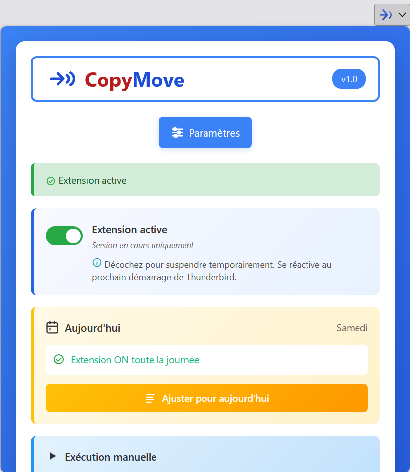
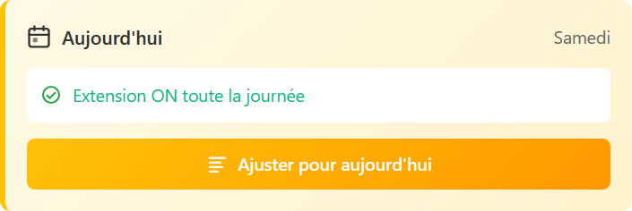
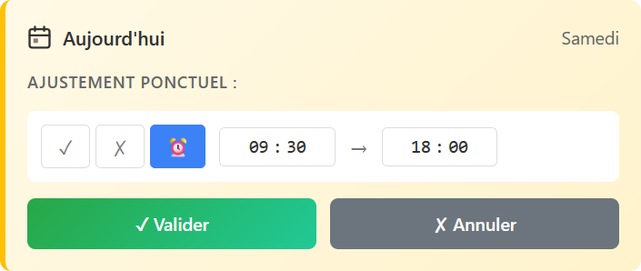
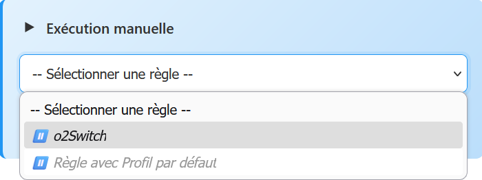
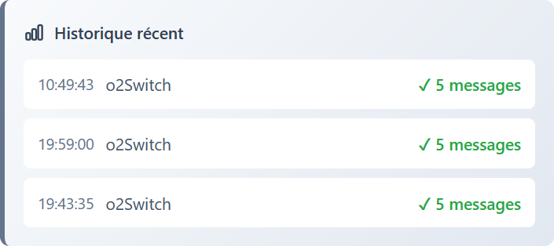

Le popup est la porte d'entrée de CopyMove dans Thunderbird. Cliquez sur l'icône de l'extension dans la barre d'outils pour l'ouvrir. Il donne accès aux paramètres et affiche l'état de l'extension en un coup d'œil.

Activer / désactiver l'extension
Le bouton bascule en haut du popup permet de suspendre CopyMove pour la session en cours. Décochez-le pour arrêter temporairement le traitement des règles.
Planification — Aujourd'hui
La section Aujourd'hui affiche le jour en cours et le mode de fonctionnement prévu selon votre planification hebdomadaire :
- ✓ ON toute la journée — l'extension fonctionne en continu
- ✗ OFF toute la journée — l'extension est désactivée
- ⏰ Plage horaire — l'extension ne fonctionne qu'entre les heures configurées
Le bouton Ajuster pour aujourd'hui permet de modifier ponctuellement ce comportement sans toucher à la planification hebdomadaire. L'ajustement ne vaut que pour la journée en cours.


Exécution manuelle
La section Exécution manuelle permet de déclencher une règle immédiatement, sans attendre son prochain déclenchement automatique.
Sélectionnez la règle souhaitée dans la liste déroulante, puis cliquez sur Exécuter cette règle.

Historique récent
La section Historique récent affiche les cinq dernières exécutions de règles : nom de la règle, nombre de courriels traités et résultat.
Pour consulter l'historique complet, accédez à l'onglet Statistiques depuis les paramètres.
